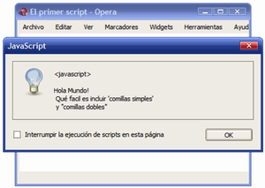

Curso de JavaScript
javaScript
Tutorial para desarrollar en Web mediante JavaScript
Contenido
[ocultar]Elementos del lenguaje
Sintaxis
- JavaScript diferencia MAYÚSCULAS y minúsculas
- Las instrucciones no necesitan acabar en punto y coma.
document.write("¡Hola Mundo!"); //también puede acabar en salto de línea: document.write("¡Hola de nuevo Mundo!")
- Comentarios:
// comentario de una línea /* comentario Multilínea */
- Se ignoran los espacios extras en blanco:
nombre="Pepito"; nombre = "Pepito";
Son equivalentes
- Aviso de continuación de sentencia en otra línea:
document.write("Hello \ World!");
Variables
- Declaración de variables
var x; var _nombrecoche;
Las variables no se inicializan (su valor está vacío). ¡Habrá que inicializarlas!
- Declaración e inicialización de variables
var x=5; var _nombrecoche=”volvo”;
Las variables se pueden declarar e inicializar a la vez. Si es texto, ¡entre comillas!
- Se pueden utilizar variables sin haber sido declaradas:
var numero_1; var numero_2; numero_1 = 3; numero_2 = 1; resultado = numero_1 + numero_2;
- Numéricas
var iva = 16; // variable tipo entero var total = 234.65; // variable tipo decimal
- Cadenas de texto
/* El contenido de texto1 tiene comillas simples, por lo que se encierra con comillas dobles */ var texto1 = "Una frase con 'comillas simples' dentro"; /* El contenido de texto2 tiene comillas dobles, por lo que se encierra con comillas simples */ var texto2 = 'Una frase con "comillas dobles" dentro';
- Caracteres especiales:
\' comilla simple \" comillas \& ampersand \\ backslash \n nueva línea \r retorno de carro \t tabulador \b backspace \f form feed
{kind=link}
Ejercicio 3
|
Crea una página que guarde un texto en una variable y lo muestre luego por pantalla:  |
{kind=link}
- Solución ejercicio 3:
<!DOCTYPE html PUBLIC "-//W3C//DTD XHTML 1.0 Transitional//EN" "http://www.w3.org/TR/xhtml1/DTD/xhtml1-transitional.dtd"> <html xmlns="http://www.w3.org/1999/xhtml"> <head> <meta http-equiv="Content-Type" content="text/html; charset=utf-8" /> <title>Ejercicio 2 - Mostrar mensajes complejos</title> <script type="text/javascript"> var msg = "Hola Mundo! \n Qué facil es incluir \'comillas simples\' \n y \"comillas dobles\" "; alert(msg); </script> </head> <body> <p>Esta página muestra un mensaje complejo</p> </body> </html>
Arrays
Un array es una colección de variables, que pueden ser todas del mismo tipo o cada una de un tipo diferente.
//variables para los días de la semana: var dia1 = "Lunes"; var dia2 = "Martes"; ... var dia7 = "Domingo"; //usando un array: var dias = ["Lunes", "Martes", "Miércoles", "Jueves", "Viernes", "Sábado", "Domingo"]; //el array empieza en 0 var diaSeleccionado = dias[0]; // diaSeleccionado = "Lunes" var otroDia = dias[5]; // otroDia = "Sábado"
Ejercicio 4
|
Crear un array llamado meses y que almacene el nombre de los doce meses del año. Mostrar por pantalla los doce nombres utilizando la función alert(). |
- Solución ejercicio 4:
<!DOCTYPE html PUBLIC "-//W3C//DTD XHTML 1.0 Transitional//EN" "http://www.w3.org/TR/xhtml1/DTD/xhtml1-transitional.dtd"> <html xmlns="http://www.w3.org/1999/xhtml"> <head> <meta http-equiv="Content-Type" content="text/html; charset=utf-8" /> <title>Ejercicio 3 - Arrays simples</title> <script type="text/javascript"> var meses = ["Enero", "Febrero", "Marzo", "Abril", "Mayo", "Junio", "Julio", “Agosto", "Septiembre", "Octubre", "Noviembre", "Diciembre"]; alert(meses[0]); alert(meses[1]);alert(meses[2]);alert(meses[3]); alert(meses[4]); alert(meses[5]);alert(meses[6]);alert(meses[7]); alert(meses[8]); alert(meses[9]);alert(meses[10]);alert(meses[11]); </script> </head> <body> <p>Esta página muestra los 12 meses del año</p> </body> </html>
Booleanos
Puede tener 2 valores: false o true. Trabajaremos con ellos en programación más avanzada de JavaScript. Ejemplos:
var clienteRegistrado = false; var ivaIncluido = true;
Operadores
Operadores de asignación
= += -= *= /= %=
var numero1 = 3; var numero2 = 4; 5 = numero1; /* Error, la asignación siempre se realiza a una variable, por lo que en la izquierda no se puede indicar un número */ // Ahora, la variable numero1 vale 5 numero1 = 5; // Ahora, la variable numero1 vale 4 numero1 = numero2;
Operadores de incremento y decremento
var numero = 5; numero=numero +1; alert(numero); // numero = 6 var numero = 5; ++numero; alert(numero); // numero = 6 var numero = 5; numero=numero - 1; alert(numero); // numero = 4 var numero = 5; --numero; alert(numero); // numero = 4
Los operadores incremento y decremento se pueden ejecutar como prefijo o sufijo:
var numero1 = 5; var numero2 = 2; numero3 = numero1++ + numero2; // numero3 = 7, numero1 = 6 var numero1 = 5; var numero2 = 2; numero3 = ++numero1 + numero2; // numero3 = 8, numero1 = 6
Operadores lógicos
- Negación
var visible = true; alert(!visible); // Muestra "false" y no "true"
- AND
var valor1 = true; var valor2 = false; resultado = valor1 && valor2; // resultado = false valor1 = true; valor2 = true; resultado = valor1 && valor2; // resultado = true
- OR
var valor1 = true; var valor2 = false; resultado = valor1 || valor2; // resultado = true valor1 = false; valor2 = false; resultado = valor1 || valor2; // resultado = false
Operadores matemáticos
+ - * / %
- Ejemplos:
var numero1 = 10; var numero2 = 5; resultado = numero1 / numero2; // resultado = 2 resultado = numero1 % numero2; // resultado = 0 numero1 = 9; numero2 = 5; resultado = numero1 % numero2; // resultado = 4 var numero1 = 5; numero1 += 3; // numero1 = numero1 + 3 = 8 numero1 -= 1; // numero1 = numero1 - 1 = 4 numero1 *= 2; // numero1 = numero1 * 2 = 10 numero1 /= 5; // numero1 = numero1 / 5 = 1 numero1 %= 4; // numero1 = numero1 % 4 = 1
Operadores relacionales
Son: mayor que (>), menor que (<), mayor o igual (>=), menor o igual (<=), igual que (==) y distinto de (!=)
var numero1 = 3; var numero2 = 5; resultado = numero1 > numero2; // resultado = false resultado = numero1 < numero2; // resultado = true numero1 = 5; numero2 = 5; resultado = numero1 >= numero2; // resultado = true resultado = numero1 <= numero2; // resultado = true resultado = numero1 == numero2; // resultado = true resultado = numero1 != numero2; // resultado = false
Sentencias condicionales
if-else
- Ejemplo de uso de if en una sentencia condicional
<script type="text/javascript"> //Escribe “A desayunar” si son las 9 var d=new Date(); var time=d.getHours(); if (time==9) { document.write("<b>¡A desayunar!</b>"); } </script>
if-else if - else
<script type="text/javascript"> var d = new Date() var time = d.getHours() if (time>6 && time<=14) { document.write("<b>Buenos días</b>"); } else if (time>14 && time<22) { document.write("<b>Buenas tardes</b>"); } else { document.write("<b>Buenas noches</b>"); } </script>
switch
<script type="text/javascript"> //Recibes diferente saludo en función del día de la semana en que estemos //Domingo=0, Lunes=1 etc. var d=new Date(); dia=d.getDay(); switch (dia) { case 5: document.write("Por fin viernes"); break; case 6: document.write("Sábado fiestuqui"); break; case 0: document.write("A dormir que es domingo"); break; default: document.write("¡A ver si llega el fin de semana!"); } </script>
Ventanas popup
Alert Box
Presentan un botón de ok. Simplemente muestran información.
<html> <head> <script type="text/javascript"> function mostrar_alerta() { alert("¡Hola!" + '\n' + "Me has pulsado!"); } </script> </head> <body> <input type="button" onclick="mostrar_alerta()" value="Mostrar ventana de alerta" /> </body> </html>
Prompt Box
Se utilizan para que el usuario introduzca un valor antes de entrar a la página.
<html> <head> <script type="text/javascript"> function disp_prompt() { var nombre=prompt("Por favor escribe aquí tu nombre","Pepito piscinas"); if (nombre!=null && nombre!="") { document.write("Hola " + nombre + "¿Qué tal estás?"); } } </script> </head> <body> <input type="button" onclick="disp_prompt()" value="Mostrar un prompt box" /> </body> </html>
Confirm Box
Presentan un botón de ok y otro de cancelar. Devuelven verdadero (ok) o falso (cancel).
<html> <head> <script type="text/javascript"> function disp_confirm() { var r=confirm("Pulsa un botón"); if (r==true) { document.write("¡Has pulsado el botón de OK!"); } else { document.write("¡Has pulsado el botón de cancelar!"); } } </script> </head> <body> <input type="button" onclick="disp_confirm()" value="Mostrar un confirm box" /> </body> </html>
Bucle for
<html> <body> <script type="text/javascript"> var i=0; for (i=0;i<=10;i++) { document.write("El número es " + i); document.write("<br />"); } </script> </body> </html>
Resultado: El número es 0 El número es 1 El número es 2 .... El número es 10
Bucle while
<html> <body> <script type="text/javascript"> var i=0; while (i<=10) { document.write("El número es " + i); document.write("<br />"); i=i+1; } </script> </body> </html>
Resultado: El número es 0 El número es 1 El número es 2 .... El número es 10
Bucle do ... while
<html> <body> <script type="text/javascript"> var i=0; do { document.write("El número es " + i); document.write("<br />"); i=i+1; } while (i<0); </script> </body> </html>
Resultado: El número es 0
break
<html> <body> <script type="text/javascript"> var i=0; for (i=0;i<=10;i++) { if (i==3) { break; } document.write("El número es " + i); document.write("<br />"); } </script> </body> </html>
Resultado: El número es 0 El número es 1 El número es 2
continue
<html> <body> <script type="text/javascript"> var i=0 for (i=0;i<=4;i++) { if (i==3) { continue; } document.write(“El número es " + i); document.write("<br />"); } </script> </body> </html>
Resultado: El número es 0 El número es 1 El número es 2 El número es 4
for (variable in object)
<html> <body> <script type="text/javascript"> var x; var mis_coches = new Array(); mis_coches[0] = "Saab"; mis_coches[1] = "Volvo"; mis_coches[2] = "BMW"; for (x in mis_coches) { document.write(mis_coches[x] + "<br />"); } </script> </body> </html>
Funciones
Funciones de usuario
function nombre_función (var1,var2,...,varX) { //aquí iría el código de la función } //Ejemplo: function multiplicar(a,b) { x=a*b; return x; }
Llamada a la función (se guarda en la variable resultado, declarada previamente):
resultado=prod(2,3);
Las variables son locales a las funciones donde son declaradas. Las variables definidas fuera de las funciones, pueden ser accedidas desde todas.
Funciones útiles para cadenas de texto
//length, calcula la longitud de una cadena de texto var mensaje = "Hola Mundo"; var numeroLetras = mensaje.length; // numeroLetras = 10 //+, se emplea para concatenar varias cadenas de texto var mensaje1 = "Hola"; var mensaje2 = " Mundo"; var mensaje = mensaje1 + mensaje2; // mensaje = "Hola Mundo" //la función concat se utiliza de modo similar al operador + var mensaje1 = "Hola"; var mensaje2 = mensaje1.concat(" Mundo"); // mensaje2 = "Hola Mundo"
//toUpperCase(), transforma a mayúsculas var mensaje1 = "Hola"; var mensaje2 = mensaje1.toUpperCase(); // mensaje2 = "HOLA" //toLowerCase(), transforma a minúsculas: var mensaje1 = "HolA"; var mensaje2 = mensaje1.toLowerCase(); // mensaje2 = "hola" //charAt(posicion), obtiene el carácter que se encuentra en la posición indicada: var mensaje = "Hola"; var letra = mensaje.charAt(0); // letra = H letra = mensaje.charAt(2); // letra = l //indexOf(caracter), calcula la primera ocurrencia del carácter indicado var mensaje = "Hola"; var posicion = mensaje.indexOf('a'); // posicion = 3 posicion = mensaje.indexOf('b'); // posicion = -1 //lastIndexOf(caracter), empieza a buscar por detrás en la cadena var mensaje = "Hola"; var posicion = mensaje.lastIndexOf('a'); // posicion = 3 //función substring(número), extraer parte de la cadena: var mensaje = "Hola Mundo"; porcion = mensaje.substring(5); // porcion = "Mundo" var porcion = mensaje.substring(1, 8); // porcion = "ola Mun" //función split para obtener arrays de texto: var mensaje = "Hola Mundo, soy una cadena de texto!"; var palabras = mensaje.split(" "); // palabras = ["Hola", "Mundo,", "soy", "una", "cadena", "de", "texto!"]; //Con esta función se pueden extraer fácilmente las letras que forman una palabra: var palabra = "Hola"; var letras = palabra.split(""); // letras = ["H", "o", "l", "a"]
Funciones útiles para arrays
//length, calcula el número de elementos de un array var vocales = ["a", "e", "i", "o", "u"]; var numeroVocales = vocales.length; // numeroVocales = 5 //concat(), se emplea para concatenar los elementos de varios arrays var array1 = [1, 2, 3]; array2 = array1.concat(4, 5, 6); // array2 = [1, 2, 3, 4, 5, 6] //join(separador), es la función contraria a split(). Une los elementos de un array para formar una cadena de texto. var array = ["hola", "mundo"]; var mensaje = array.join(""); // mensaje = "holamundo" //Para unir los elementos se utiliza el carácter separador indicado: mensaje = array.join(" "); // mensaje = "hola mundo" //pop(), elimina el último elemento del array y lo devuelve. El array original se modifica y su longitud disminuye en 1 elemento. var array = [1, 2, 3]; var ultimo = array.pop(); // ahora array = [1, 2], ultimo = 3 push(), añade un elemento al final del array. El array original se modifica y aumenta su longitud en 1 elemento. var array = [1, 2, 3]; array.push(4); // ahora array = [1, 2, 3, 4] //shift(), elimina el primer elemento del array y lo devuelve. El array original se ve modificado y su longitud disminuida en 1 elemento. var array = [1, 2, 3]; var primero = array.shift(); // ahora array = [2, 3], primero = 1 //unshift(), añade un elemento al principio del array. El array original se modifica y aumenta su longitud en 1 elemento. (También es posible añadir más de un elemento a la vez) var array = [1, 2, 3]; array.unshift(0); // ahora array = [0, 1, 2, 3] reverse(), modifica un array colocando sus elementos en el orden inverso a su posición original: var array = [1, 2, 3]; array.reverse(); // ahora array = [3, 2, 1]
Funciones útiles para números
//función isNaN para comprobar si es un número: var numero1 = 0; var numero2 = 0; alert(numero1/numero2); // se muestra el valor NaN var numero1 = 0; var numero2 = 0; if(isNaN(numero1/numero2)) { alert("La división no está definida para los números indicados"); } else { alert("La división es igual a => " + numero1/numero2); } //función toFixed(digitos), devuelve el número con los decimales indicados y los redondeos necesarios: var numero1 = 4564.34567; numero1.toFixed(2); // 4564.35
Ámbito de las variables
- Variables locales: Declaradas dentro de una función. Visibles solo desde la función.
- Variables globales: Declaradas fuera de las funciones. ¡O sin declarar!
function creaMensaje() { var mensaje = “Mensaje de prueba”; alert(mensaje); } CreaMensaje(); //variable local, el alert tiene mensaje function creaMensaje() { var mensaje = “Mensaje de prueba”; } creaMensaje(); alert(mensaje); //variable local, el alert vacío
var mensaje = “Mensaje de prueba”; function muestraMensaje() { alert(mensaje); } //variable global, el alert tiene mensaje function creaMensaje() { mensaje = "Mensaje de prueba"; } creaMensaje(); alert(mensaje); //variable global, el alert tiene mensaje